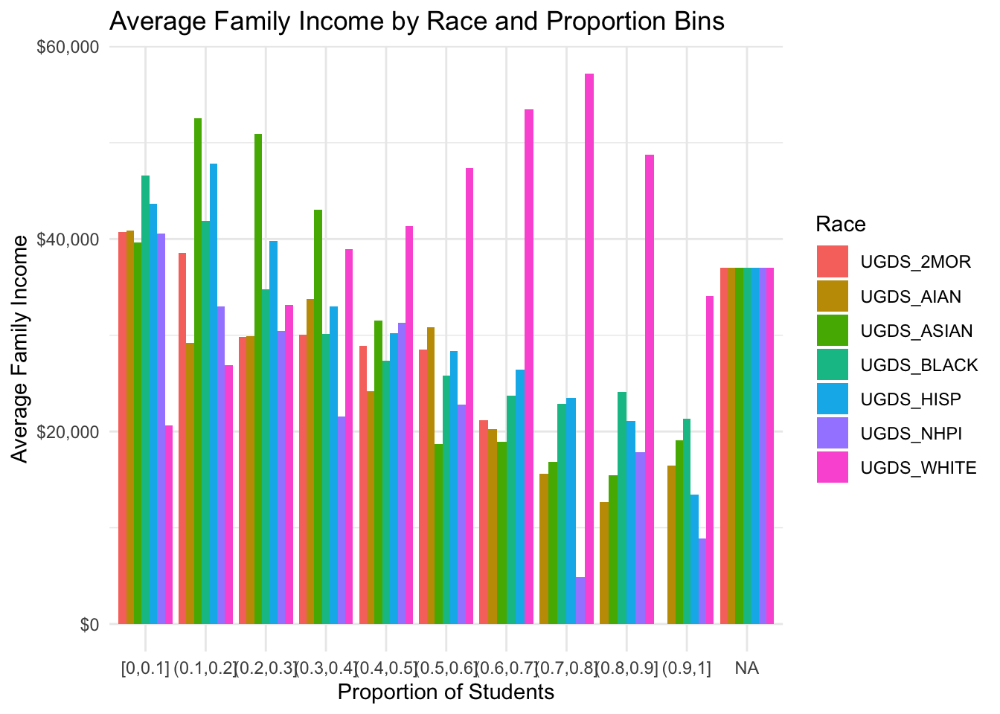
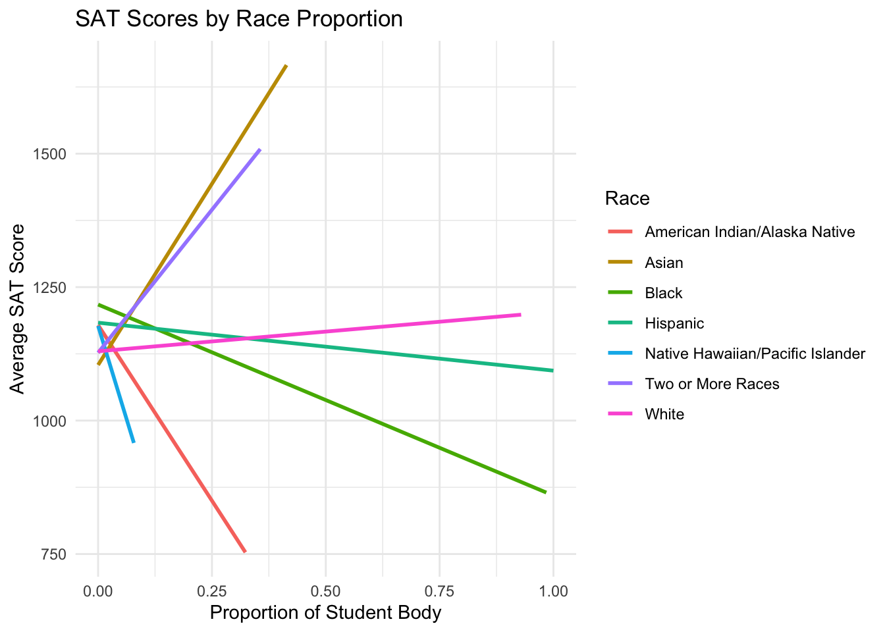

In the previous blog posts, we observed big trends, particularly around racial disparities in faculty representation, student enrollment, cohort size, and completion rates. These big trends point toward systemic inequalities in higher education that affect access, support, and outcomes for minority students. In Blog post 4, we will focus on exploring relationships between income, race, financial aid, and withdrawal and completion rates.
In schools where White students make up over 40% of enrollment, they have the highest family income. For schools with 10% to 40% of student enrollment by race, Asian students tend to have the highest family income.
library(tidyverse)
cleaned_data <- cleaned_data %>%
mutate(
Aggregate_Completion_Rate = (
C150_4_WHITE * UGDS_WHITE +
C150_4_BLACK * UGDS_BLACK +
C150_4_HISP * UGDS_HISP +
C150_4_ASIAN * UGDS_ASIAN +
C150_4_AIAN * UGDS_AIAN +
C150_4_NHPI * UGDS_NHPI +
C150_4_2MOR * UGDS_2MOR
) / (UGDS_WHITE + UGDS_BLACK + UGDS_HISP + UGDS_ASIAN + UGDS_AIAN + UGDS_NHPI + UGDS_2MOR)
)
completion_model <- lm(Aggregate_Completion_Rate ~ FAMINC * (UGDS_WHITE + UGDS_BLACK + UGDS_HISP + UGDS_ASIAN + UGDS_AIAN + UGDS_NHPI + UGDS_2MOR),
data = cleaned_data)
summary(completion_model)
Call:
lm(formula = Aggregate_Completion_Rate ~ FAMINC * (UGDS_WHITE +
UGDS_BLACK + UGDS_HISP + UGDS_ASIAN + UGDS_AIAN + UGDS_NHPI +
UGDS_2MOR), data = cleaned_data)
Residuals:
Min 1Q Median 3Q Max
-0.49457 -0.06296 0.00541 0.06984 0.42853
Coefficients:
Estimate Std. Error t value Pr(>|t|)
(Intercept) 2.113e-03 1.521e-01 0.014 0.98892
FAMINC 9.097e-06 2.807e-06 3.241 0.00125 **
UGDS_WHITE 2.542e-01 1.664e-01 1.528 0.12709
UGDS_BLACK 2.285e-01 1.942e-01 1.176 0.23981
UGDS_HISP 3.461e-01 1.647e-01 2.101 0.03597 *
UGDS_ASIAN 7.927e-01 2.565e-01 3.090 0.00208 **
UGDS_AIAN 8.094e-01 1.107e+00 0.731 0.46509
UGDS_NHPI 3.434e+00 2.123e+00 1.617 0.10627
UGDS_2MOR -5.820e-01 4.748e-01 -1.226 0.22070
FAMINC:UGDS_WHITE -4.813e-06 2.982e-06 -1.614 0.10700
FAMINC:UGDS_BLACK -7.287e-06 3.927e-06 -1.856 0.06392 .
FAMINC:UGDS_HISP -5.209e-06 3.148e-06 -1.655 0.09847 .
FAMINC:UGDS_ASIAN -1.306e-07 4.723e-06 -0.028 0.97795
FAMINC:UGDS_AIAN -2.161e-05 2.256e-05 -0.958 0.33846
FAMINC:UGDS_NHPI -8.630e-05 4.254e-05 -2.029 0.04288 *
FAMINC:UGDS_2MOR 5.460e-06 8.407e-06 0.649 0.51624
---
Signif. codes: 0 '***' 0.001 '**' 0.01 '*' 0.05 '.' 0.1 ' ' 1
Residual standard error: 0.1166 on 669 degrees of freedom
(5799 observations deleted due to missingness)
Multiple R-squared: 0.6288, Adjusted R-squared: 0.6205
F-statistic: 75.56 on 15 and 669 DF, p-value: < 2.2e-16Result for modeling: There are no residual degrees of freedom which indicates that the model is overfitted. Multiple R-squared is 1 with NA Adjusted R-squared.
suppressPackageStartupMessages(library(tidyverse))
data <- readRDS("dataset/cleaned_dataset.rds")
sat_data <- data %>%
select(SAT_AVG, UGDS_WHITE, UGDS_BLACK, UGDS_HISP, UGDS_ASIAN, UGDS_AIAN, UGDS_NHPI, UGDS_2MOR) %>%
filter(!is.na(SAT_AVG))
sat_long <- sat_data %>%
pivot_longer(
cols = starts_with("UGDS_"),
names_to = "Race",
values_to = "Proportion"
)
sat_long <- sat_long %>%
mutate(Race = recode(Race,
"UGDS_WHITE" = "White",
"UGDS_BLACK" = "Black",
"UGDS_HISP" = "Hispanic",
"UGDS_ASIAN" = "Asian",
"UGDS_AIAN" = "American Indian/Alaska Native",
"UGDS_NHPI" = "Native Hawaiian/Pacific Islander",
"UGDS_2MOR" = "Two or More Races"))
ggplot(sat_long, aes(x = Proportion, y = SAT_AVG)) +
geom_smooth(aes(color = Race), method = "lm", se = FALSE) +
labs(title = "SAT Scores by Race Proportion",
x = "Proportion of Student Body",
y = "Average SAT Score",
color = "Race") +
theme_minimal()`geom_smooth()` using formula = 'y ~ x'